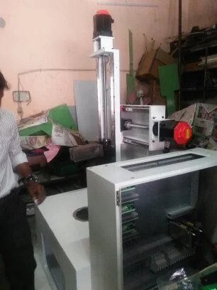

SPM / 01
4-Servo Seal Slotting
Servo automation · dedicated machine architecture
Each option below is interactive. Open one, scroll it like a real website, use its menus, change its capability or project view, and then switch directly to another direction.
VSK's actual logo · real VSK machine photography · machine building · retrofit/reconditioning · precision manufacturing · customer reviews · direct enquiry
Special purpose machines, CNC/PLC retrofit, industrial automation and precision manufacturing — connected as one engineering problem.


 04 SERVO / SPMVSK PROJECT ARCHIVE
04 SERVO / SPMVSK PROJECT ARCHIVE

Application study, machine design, hydraulics, pneumatics, controls, assembly, trials and commissioning.

Mechanical correction, electrical rebuilding and CNC/PLC modernization as one recommissioning scope.

Turning, machining, grinding, fixtures and process support for repeatable production.
“Custom built machines, CNC retrofit solution services provider.”
“Special purpose machines effective price”
Machines, retrofits and process equipment presented through VSK’s own engineering work.
Enter the experience ↓From application study to commissioned SPM — machine architecture, actuation, controls and trials developed around the production operation.
See built machines →Mechanical restoration and controls modernization presented as a visual transformation story.

Turning, machining, grinding, fixtures and component support — tied back to the way the machine actually produces.


“Good service company”
“Custom built machines, CNC retrofit solution services provider.”
Machine design, fluid power, controls, electrification, retrofit and precision manufacturing in one practical engineering organization.
 REF / RETROFIT / 2011—2026
REF / RETROFIT / 2011—2026Servo automation · dedicated machine architecture
Machine second life · controls modernization
Inspection equipment · fixture engineering
Face-out alignment reference
Z-cut machine reference
Metal-seal facing project
“Custom built machines, CNC retrofit solution services provider.”
“Special purpose machines effective price”
Machine · component · operation · problem · target · controller · location